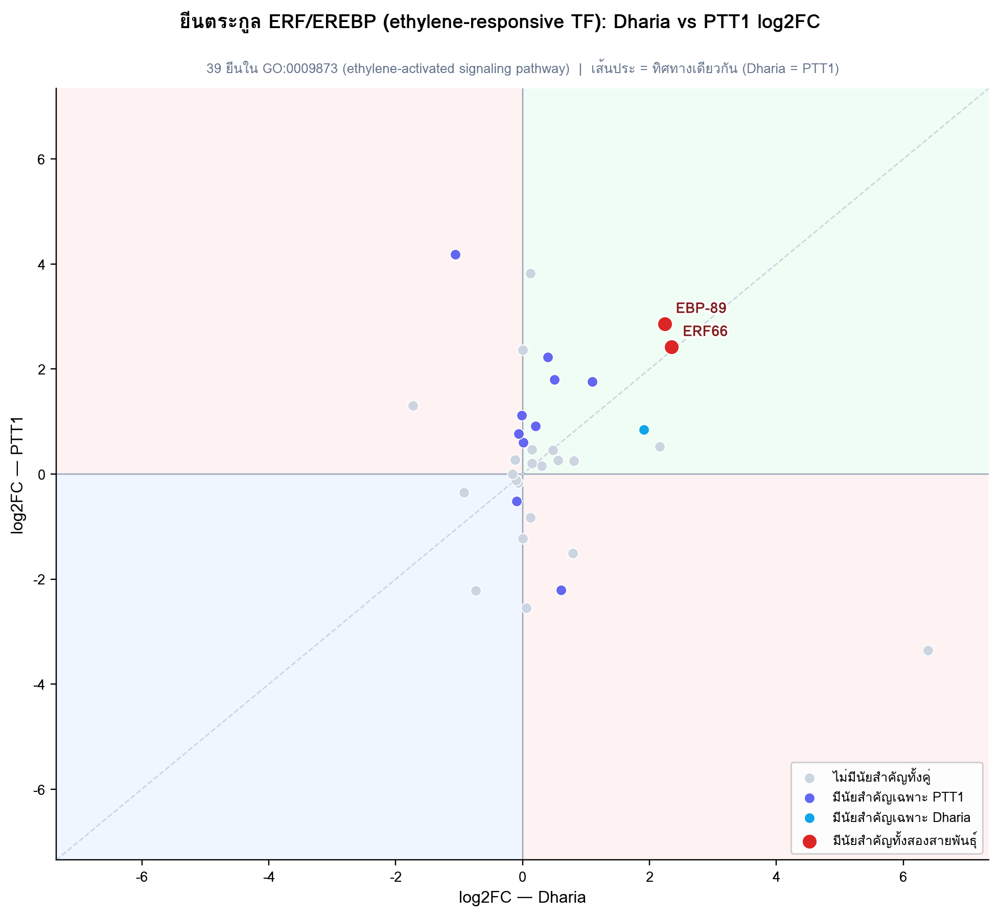
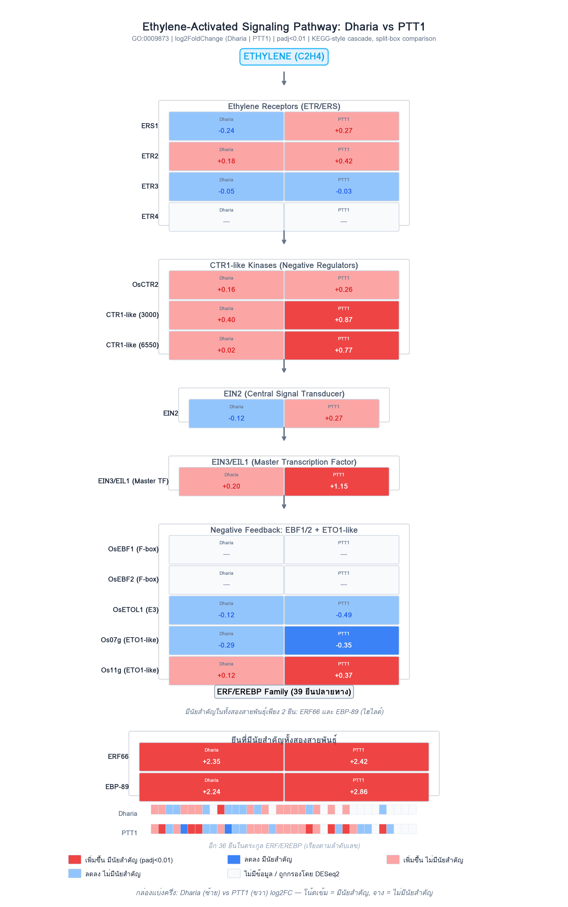
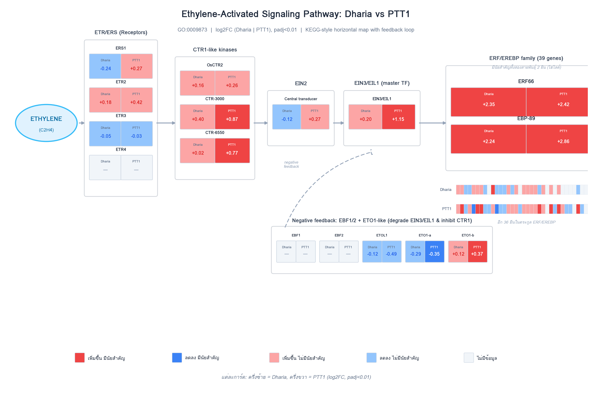

Ethylene-Activated Signaling Pathway — รายละเอียดระดับยีน
ขยายความจากหัวข้อ ethylene-activated signaling pathway ในหน้า GO Enrichment — pathway นี้ (GO:0009873) ไม่เคยมีนัยสำคัญระดับ term ในสายพันธุ์ใดเลย (FDR ≥ 0.29 ทุกจุดที่ทดสอบได้) แต่ยีนตระกูล transcription factor ปลายทาง ERF/EREBP สองตัว — ERF66 และ EBP-89 — แสดงออกเพิ่มขึ้น อย่างมีนัยสำคัญในทั้ง Dharia และ PTT1 หน้านี้เจาะลึกด้วย 3 มุมมอง: ระดับยีนเดี่ยว (scatter), Fold Enrichment ที่ normalize แล้ว, และลำดับขั้นตอนการส่งสัญญาณทั้งสาย (2 รูปแบบ)
1. ระดับยีนเดี่ยว: ERF66 และ EBP-89 คือยีนตอบสนองที่สอดคล้องกันที่สุด
Scatter plot ด้านล่างแสดง log2FC ของยีนตระกูล ERF/EREBP ทั้ง 39 ยีน โดยแกน x = Dharia, แกน y = PTT1 จุดสีแดงคือ ERF66 และ EBP-89 — สองยีนเดียวที่มีนัยสำคัญในทั้งสองสายพันธุ์ ทั้งคู่อยู่ใน quadrant “เพิ่มขึ้นทั้งคู่” (บนขวา) และอยู่ใกล้เส้นทแยงมุม (ทิศทาง/ขนาดใกล้เคียงกันระหว่างสองสายพันธุ์) ต่างจากยีนอื่นๆ ในตระกูลที่ส่วนใหญ่ไม่มีนัยสำคัญเลยทั้งคู่ หรือมีนัยสำคัญเฉพาะ PTT1

2. Fold Enrichment: pathway ไม่ผ่านเกณฑ์นัยสำคัญในสายพันธุ์ใดเลย
แม้ Dharia Up จะมี Fold Enrichment สูงถึง 3.6× (3/35 ยีน) แต่ FDR ยังสูงถึง 0.29 — ไม่ผ่านเกณฑ์นัยสำคัญ (FDR<0.05) ส่วน PTT1 Up มี FE เพียง 1.25× (FDR=0.83) และอีกสองกลุ่ม (Dharia Down, PTT1 Down) ไม่มี enrichment เลย ยืนยันว่า ethylene-activated signaling pathway ไม่เคยมีนัยสำคัญระดับ pathway ในสายพันธุ์ใดเลย ทั้งที่มียีนปลายทางบางตัว (ERF66, EBP-89) ที่แสดงออกเปลี่ยนแปลงชัดเจนมาก

3. ลำดับขั้นตอนการส่งสัญญาณ: จากตัวรับ ethylene ถึงยีนปลายทาง
“คาสเคด” (cascade) คือลำดับขั้นตอนการส่งสัญญาณต่อกันเป็นทอดๆ ตั้งแต่ฮอร์โมนจับตัวรับ จนถึงยีนที่ถูกกระตุ้นจริง มีลำดับดังนี้:
- Ethylene (C2H4) จับกับตัวรับที่เยื่อหุ้มเซลล์ — กลุ่มโปรตีน ETR/ERS (ERS1, ETR2, ETR3, ETR4)
- เมื่อไม่มี ethylene ตัวรับจะกระตุ้น CTR1-like kinase ให้ทำงานเป็น “เบรก” ยับยั้งสัญญาณไว้ตลอด — พอ ethylene มาจับตัวรับ จะไปปิดการทำงานของ CTR1 (ปลดเบรก)
- เมื่อเบรกถูกปลด สัญญาณส่งต่อผ่าน EIN2 ซึ่งเป็นตัวกลางส่งสัญญาณเข้านิวเคลียส
- EIN2 กระตุ้น EIN3/EIL1 ซึ่งเป็น master transcription factor — ตัวควบคุมหลักที่เปิด การทำงานของยีนปลายทาง
- EIN3/EIL1 กระตุ้นยีนตระกูล ERF/EREBP (39 ยีนในการวิเคราะห์นี้ เช่น ERF66, EBP-89) ให้แสดงออกเพิ่มขึ้น — ยีนกลุ่มนี้เป็นตัวขับเคลื่อนการตอบสนองทางสรีรวิทยาต่อ ethylene จริงๆ
Negative feedback: โปรตีน EBF1/2 และ ETO1-like คอยย่อยสลาย/ยับยั้ง EIN3/EIL1 กลับไป เป็นการควบคุมไม่ให้สัญญาณแรงเกินไป


วิธีทำซ้ำ (Reproducing this): รายชื่อยีนตระกูล ERF/EREBP (39 ยีน) และยีนต้นน้ำ
(receptor, CTR1-like, EIN2, EIN3/EIL1, EBF1/2, ETO1-like) มาจากการสแกนแอนโนเทชันที่เกี่ยวข้องกับ
GO:0009873 แล้ว join กับตาราง DESeq2 v3 เต็มรูปแบบ (ไม่ใช่แค่ยีนที่มีนัยสำคัญ) ของทั้งสองสายพันธุ์
จำนวนยีนมีนัยสำคัญตรวจสอบไขว้กับค่า k ในไฟล์ GOenrich_*_allterms.csv
ต้นฉบับแล้วตรงกันทุกตัวเลข ยีนที่ไม่มีค่า log2FC ในสายพันธุ์ใด (ถูกกรองโดย DESeq2 independent
filtering) จะแสดงเป็นสีขาว/ไม่มีข้อมูลในแผนภาพ
← กลับไปที่ GO Enrichment overview สำหรับภาพรวม Dharia/PTT1 Up/Down ทั้งหมดที่เป็นที่มาของหน้านี้